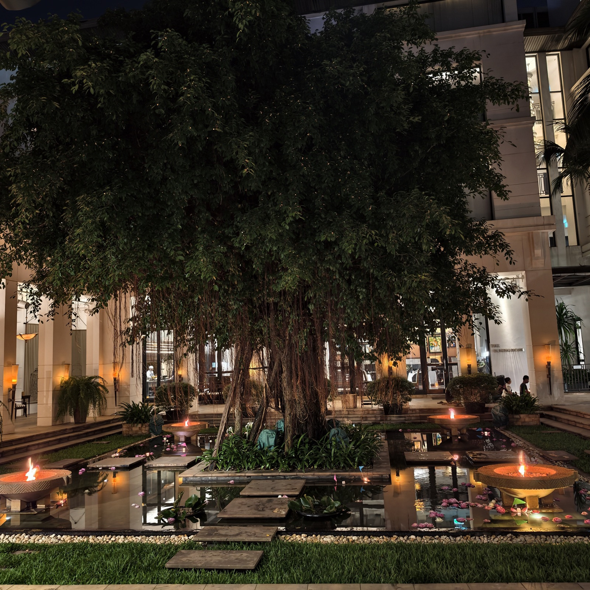
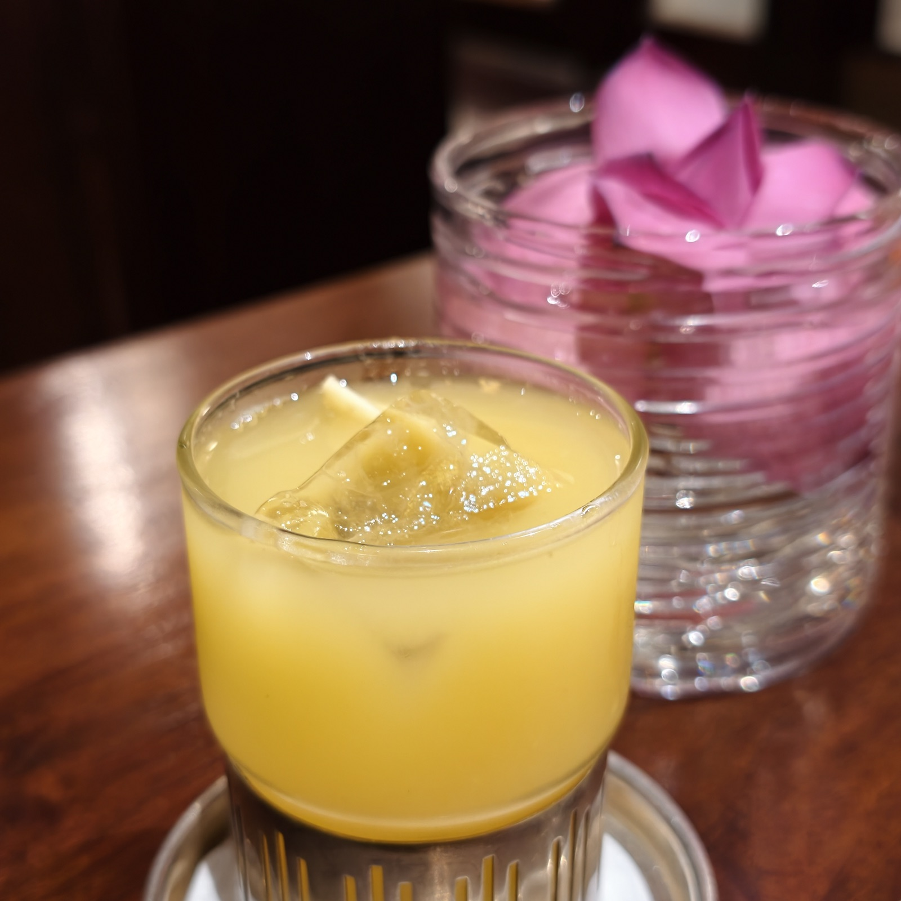
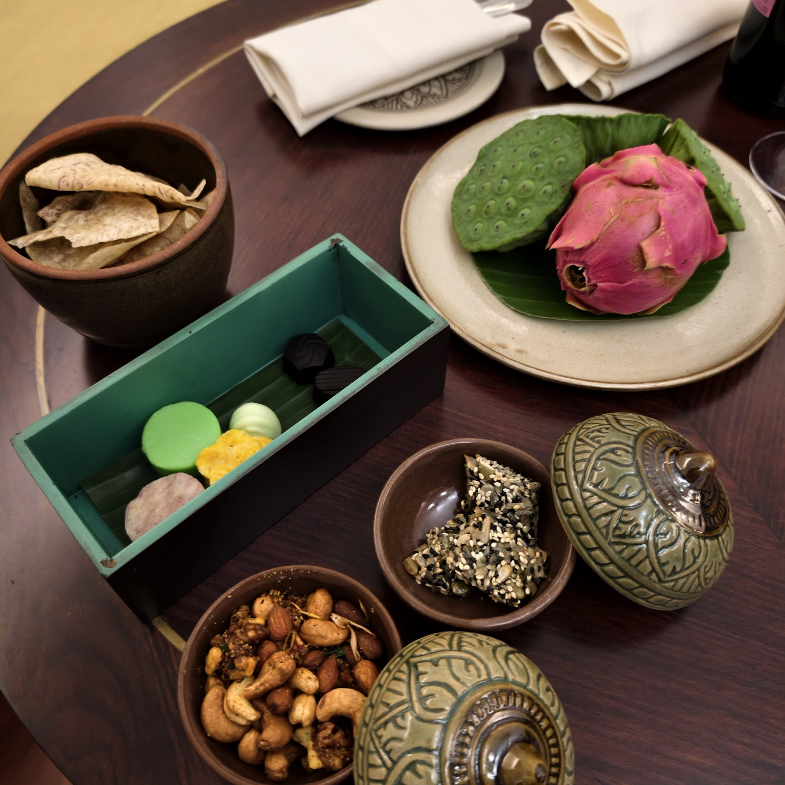
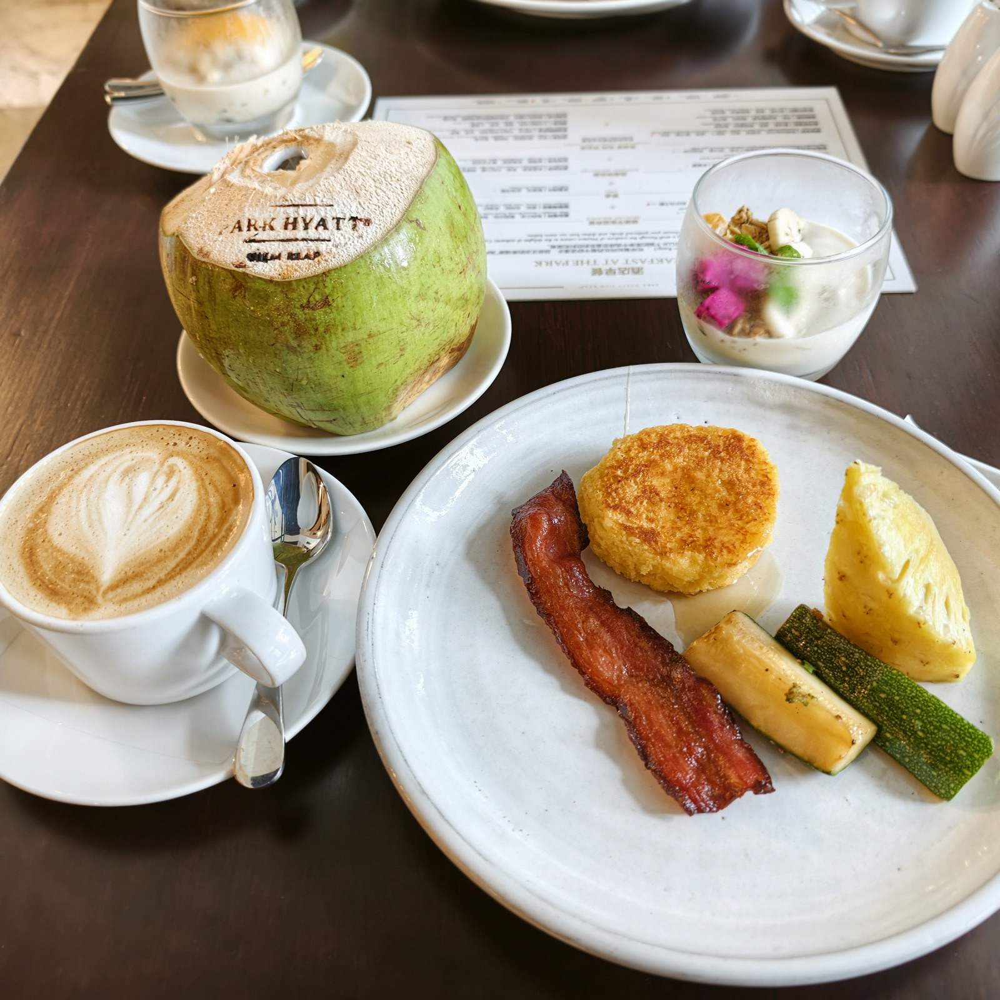
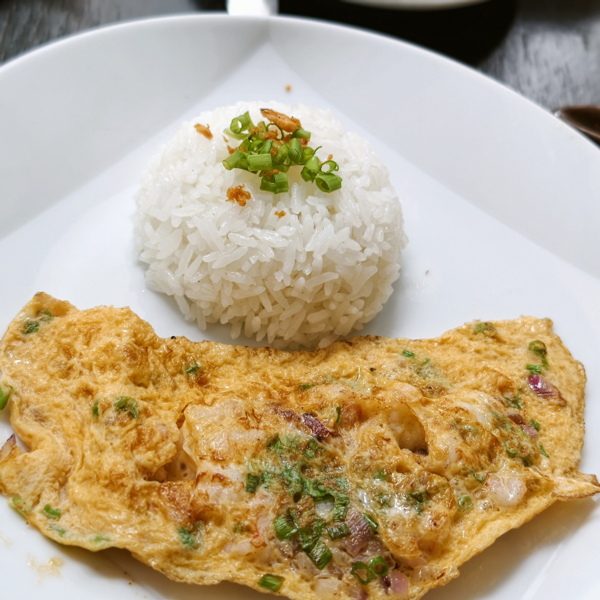
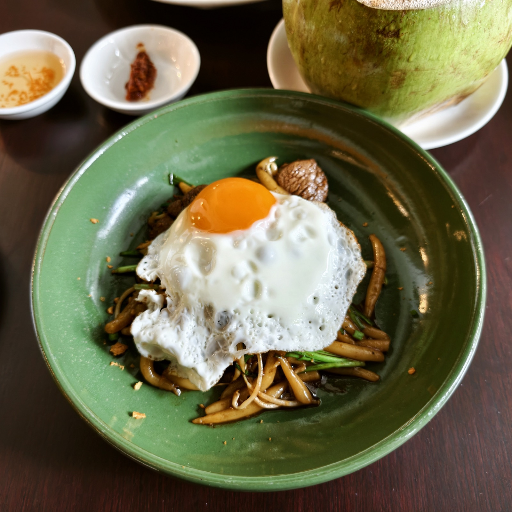
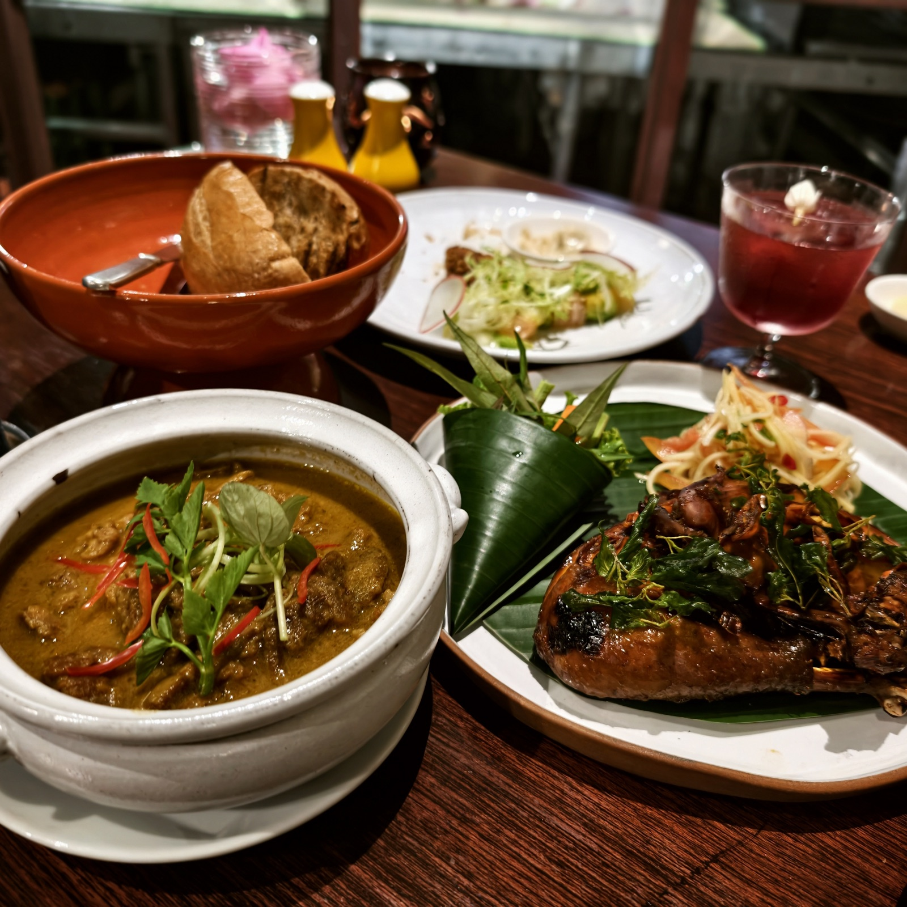
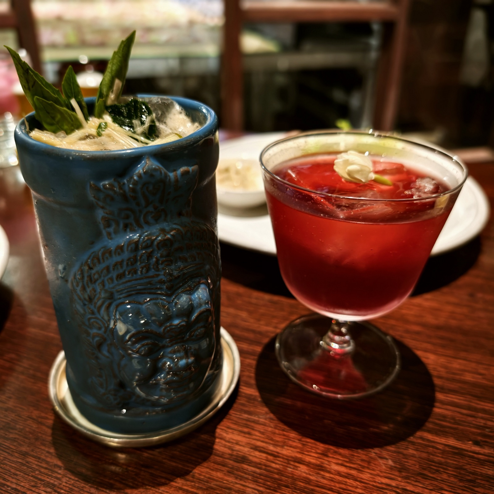

柏悦
Park Hyatt Siem Reap
米其林一星钥
在暹粒的几天都住在柏悦。酒店中庭有一方水池，池中央立着一棵老榕树；每天早餐的时候，池边会围起一圈当地集市，也有人坐在那里弹奏高棉音乐。酒店里有这座小城的日常，这是我喜欢柏悦的地方。



早餐选择很丰富，可以单点，服务生里有中文说得很好的。高棉咖啡味道独特，做成拿铁尤其好喝，椰子每天必点。每天早餐也一定要吃高棉本地的菜，最爱虾蛋饼和银针粉。



酒店的晚餐同样主打高棉菜，菜单会介绍柬埔寨每个省份的代表菜和它的特点——优雅，又很有当地特色，鸡尾酒也好喝。

